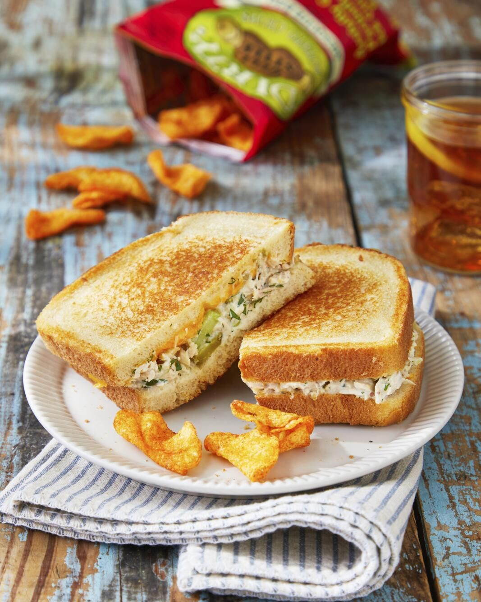

Back
Tuna Sandwich

The underrated tuna melt, that staple of diners and lunch plates everywhere, deserves to be making a big time comeback.
First, it's as tasty as can be. Second, it's easy to make, and third, you probably have most of the ingredients in your fridge right now. What are you waiting for?
We took that classic tuna salad and gave it a makeover with lots of fresh greens and herbs (celery, dill, scallions) and just the right amount — not too much — of mayo.
Then we layered lots of grated Cheddar on top (so it'll melt), and topped it with a technique for pan-toasting bread that, as you can see, looks as good as it tastes.
Serve it with your favorite chips and a pickle spear for the ultimate lunch-in-a-diner-but-at-home experience.
Ingridients
- 2 (5-ounce) cans chunk white tuna, drained
- 8 slices sourdough bread
- 1/4 c. mayonnaise
- 4 oz. extra-sharp Cheddar, grated (about 1 cup)
- Kosher salt and freshly ground black pepper
Steps
-
Make Tuna Salad: Combine tuna, celery, parsley, dill, scallions, lemon juice, mayonnaise, cornichons, pickle relish, and mustard in a bowl. Season with salt and pepper.
-
Make Sandwich: Place bread on a work surface and spread 1 tablespoon mayonnaise on each.
Turn 4 slices over, and top with Tuna Salad and Cheddar, dividing evenly.
Season with salt and pepper. Sandwich with remaining bread, mayonnaise sides up.
-
Cook, in two batches, in a large nonstick skillet over medium heat, turning once, until golden brown and cheese is melted, 12 to 14 minutes.